Predicitve Analysis
Pamela Dekpo
Make Predictions with Prediction Intervals
If the assumptions of a linear regression model are fulfilled, we can trust the standard errors. Estimates of the regression coefficients are subject to sampling uncertainty. Therefore, we will never exactly estimate the true value of these parameters from sample data in an empirical application.
However, we may construct confidence intervals for the intercept and the slope parameter.
Confidence Interval: An interval designed to hold an unknown population parameter with some level (often 95%) of confidence.
Prediction Interval: An interval designed to hold a fraction of the values of the variable y (for a given value of x).
Time Series Analysis
Time Series Analysis is the technique used to study observations that are measured over time. Examples include natural phenomena and business variables measured at regular intervals (hourly,daily). -> Data with time component often suffer from autocorrelation - standard OLS is not feasible.
Assumptions:
- We assume dependence of the errors
- Successive times are equally spaced apart (monthly, quarterly or annual observations)
Decomposition of Additive Time Series
- Trend: represents variations of low frequency in a time series = Find the general direction.
- Season: Seasonality is presence of variations that occur at regular intervals (weekly, monthly, quarterly)
- Random: components that can not be explained - uncertainty
…
Types of Decomposition
- Additive Decomposition - Most appropriate if magnitude of seasonal fluctaions or variation does not vary with level of time series: \[ y = S + T + R \]
- Multiplicative Decomposition - when variation in seaonal pattern or variation around trend cycle is proportional to the level of time series a MA is more appropriate: \[ y = S * T * R \]
- alternative: transform data until variation appears stable over time and then use AD
- when log transformation has been used, this equivalent to usin MA: because \[ y = S * T * R \] is equivalent to \[ log(y) = log(S) + log (T) + log(R) \]
How to calculate the Trend
We will use the approach of Moving Averae = \[ m = 2k + 1 \]
\[ T = 1/m sum(k,j=-k,n)Y+J \] That is, the estimate of the trend-cycle at time t is obtained by averaging values of the time series within k periods of t.
How to make Forecasts
| Methods | Explanation + Equation |
|---|---|
| Average Method | Forecast of all future values are equal to the mean of historical data: \[ y^- = (y_i + … + y_T)/T \] |
| Naive Method | Set all Forecast to the value of the last observation: \[ y^^_T+h|T = Y_T \] |
| Seasonal Naive Method | Set each forecast to be equal to the last observed value from the same season of the year: \[ y^^_T+h|T = Y_T+h-m(k+1) \] m equals seasonal period, k is the inteer part of (h-1)/m |
| Drift Method | Amount of change over time (called the drift) is set to be the average change seen in the historical data. \[ y^^_(T+h|T) = y_T + h (y_T - y_1)/(T-1) \] |
Machine Learning for Prediction
Neural Networks are forecasting methods that allow compley nonlinear relationships between the response variable and its predictors. Neurons are structured in layer: predictors (or input) from the bottom layer, forecasts (or outputs) from top layer and intermediate layer containing hidden neurons (which makes it than nonlinear).
Multilayer feed-forward Network = each layer of nodes receives inputs from the previous layers.The outputs of the nodes in one layer are inputs to the next layer. The inputs to each node are combined using a weighted linear combination.
…
Neural Network Autoregression
- With time series data, lagged values of the time series can be used as inputs to a neural network = NNAR model. ‚Ä¢ Notation = $$ NNAR(p,k) to indicate there are ùëù lagged inputs and ùëò nodes in the hidden layer. ‚Ä¢ For example, a NNR (9,5) is a neural network with the last nine observations used as inputs for forecasting the output with five neurons in the hidden layer.
Implementation in R using Cases
Case I
This refers to Confidence Intervals.
# -----------------------------------------------------------------------------------------------
# Case IV: Confidence Intervals for the Estimates. Revisit the Bundesliga Case
# -----------------------------------------------------------------------------------------------
library(readxl)
# Import the data
d <- read_xlsx("2_Bundesliga.xlsx", col_types = c("text", "numeric", "numeric", "numeric", "numeric", "numeric", "numeric", "numeric"))
# Prepare the data
c1 <- as.data.frame(c(d$Marketvalue_2011,d$Marketvalue_2012))
c2 <- as.data.frame(c(d$Points_2011,d$Points_2012))
d2 <- cbind(c1,c2)
names(d2)[1]<-"Value"
names(d2)[2]<-"Points"
d2 <- d2[complete.cases(d2), ]
cor(d2$Value,d2$Points)## [1] 0.7996386# Compute a simple model
lm1<- lm(d2$Points ~ d2$Value)
summary(lm1)##
## Call:
## lm(formula = d2$Points ~ d2$Value)
##
## Residuals:
## Min 1Q Median 3Q Max
## -15.0725 -6.6787 0.0467 4.7786 25.7984
##
## Coefficients:
## Estimate Std. Error t value Pr(>|t|)
## (Intercept) 3.157e+01 2.491e+00 12.675 1.95e-14 ***
## d2$Value 1.496e-07 1.926e-08 7.765 4.93e-09 ***
## ---
## Signif. codes: 0 '***' 0.001 '**' 0.01 '*' 0.05 '.' 0.1 ' ' 1
##
## Residual standard error: 9.369 on 34 degrees of freedom
## Multiple R-squared: 0.6394, Adjusted R-squared: 0.6288
## F-statistic: 60.29 on 1 and 34 DF, p-value: 4.926e-09# Get the 95% confidence intervals
confint(lm1)## 2.5 % 97.5 %
## (Intercept) 2.650883e+01 3.663252e+01
## d2$Value 1.104185e-07 1.887065e-07# Get the 99% confidence intervals
confint(lm1, level = 0.99)## 0.5 % 99.5 %
## (Intercept) 2.477488e+01 3.836646e+01
## d2$Value 9.700966e-08 2.021154e-07# -----------------------------------------------------------------------------------------------
# Case V: C.I. VS P.I
# -----------------------------------------------------------------------------------------------
df <- read_xls("7_Gas_Sales.xls")
plot(df$sales ~ df$traffic, xlab="Traffic in Drive-bys (000)", ylab="Sales in 000 USD", main="Sales by Traffic")
cor(df$sales,df$traffic)## [1] 0.7406724lm1 <- lm(sales ~ traffic, df)
summary(lm1)##
## Call:
## lm(formula = sales ~ traffic, data = df)
##
## Residuals:
## Min 1Q Median 3Q Max
## -3.3329 -0.8684 0.0144 0.8478 3.8181
##
## Coefficients:
## Estimate Std. Error t value Pr(>|t|)
## (Intercept) -1.33810 0.94584 -1.415 0.161
## traffic 0.23673 0.02431 9.736 4.06e-15 ***
## ---
## Signif. codes: 0 '***' 0.001 '**' 0.01 '*' 0.05 '.' 0.1 ' ' 1
##
## Residual standard error: 1.505 on 78 degrees of freedom
## Multiple R-squared: 0.5486, Adjusted R-squared: 0.5428
## F-statistic: 94.79 on 1 and 78 DF, p-value: 4.06e-15confint(lm1)## 2.5 % 97.5 %
## (Intercept) -3.2211273 0.5449326
## traffic 0.1883228 0.2851345abline(lm1,col="blue")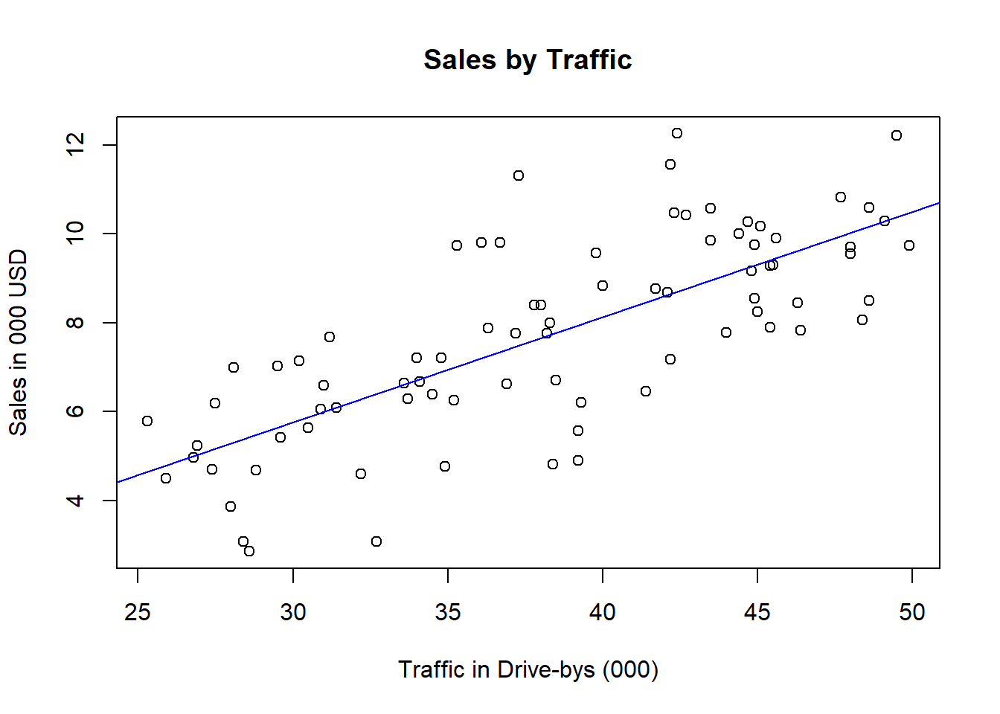
plot(residuals(lm1),lm1$fitted.values)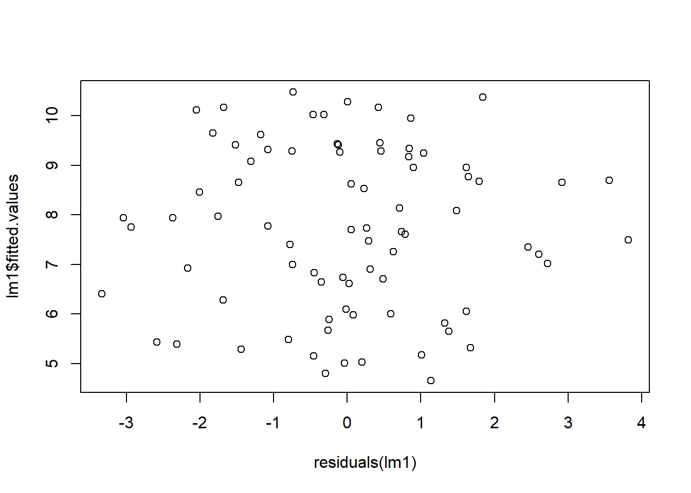
# Make a prediction for a particular value
new <- data.frame(traffic = c(8000, 32000, 40000))
# Confidence Interval
predict(lm1, newdata = new, interval="confidence")## fit lwr upr
## 1 1892.491 1507.097 2277.885
## 2 7573.978 6026.843 9121.114
## 3 9467.808 7533.425 11402.190# Prediction Interval
predict(lm1, newdata = new, interval="prediction")## fit lwr upr
## 1 1892.491 1507.085 2277.897
## 2 7573.978 6026.840 9121.117
## 3 9467.808 7533.423 11402.192# Create a complete graph including the prediction interval:
pred.int <- predict(lm1, interval = "prediction")
mydata <- cbind(df, pred.int)
head(mydata)## sales traffic fit lwr upr
## 1 6.64 33.6 6.615985 3.591780 9.640190
## 2 7.76 37.2 7.468208 4.452047 10.484369
## 3 9.56 48.0 10.024877 6.972686 13.077068
## 4 6.29 33.7 6.639658 3.615812 9.663504
## 5 10.18 45.1 9.338364 6.304641 12.372088
## 6 4.68 28.8 5.479687 2.429266 8.530109# 2. Regression line + confidence intervals
library("ggplot2")
p <- ggplot(mydata, aes(traffic, sales)) +
geom_point() +
stat_smooth(method = lm)
# 3. Add prediction intervals
p + geom_line(aes(y = lwr), color = "red", linetype = "dashed")+
geom_line(aes(y = upr), color = "red", linetype = "dashed")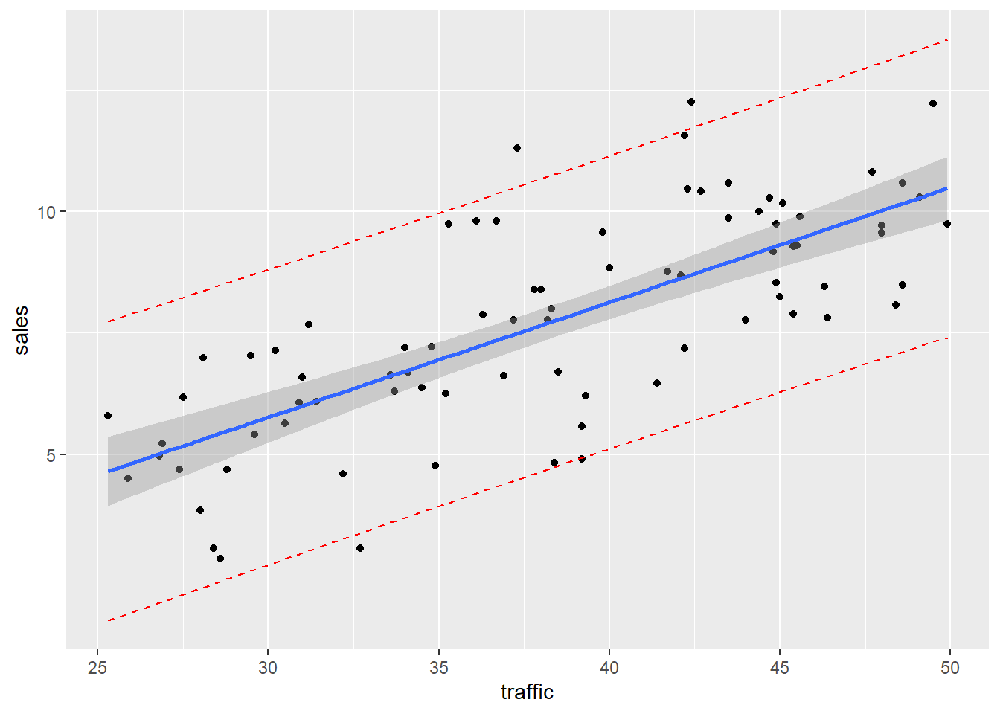
Case II
# -----------------------------------------------------------------------------------------------
# Case II: Birth rates NYC
# -----------------------------------------------------------------------------------------------
# Load Data
births <- scan("http://robjhyndman.com/tsdldata/data/nybirths.dat")
head(births)## [1] 26.663 23.598 26.931 24.740 25.806 24.364# Important: Convert to a timeseries object:
birthstimeseries <- ts(births, frequency=12, start=c(1946,1))
head(birthstimeseries)## [1] 26.663 23.598 26.931 24.740 25.806 24.364# Plot the data:
plot.ts(birthstimeseries, ylab="Births in 000", main="Births in 000 in NYC")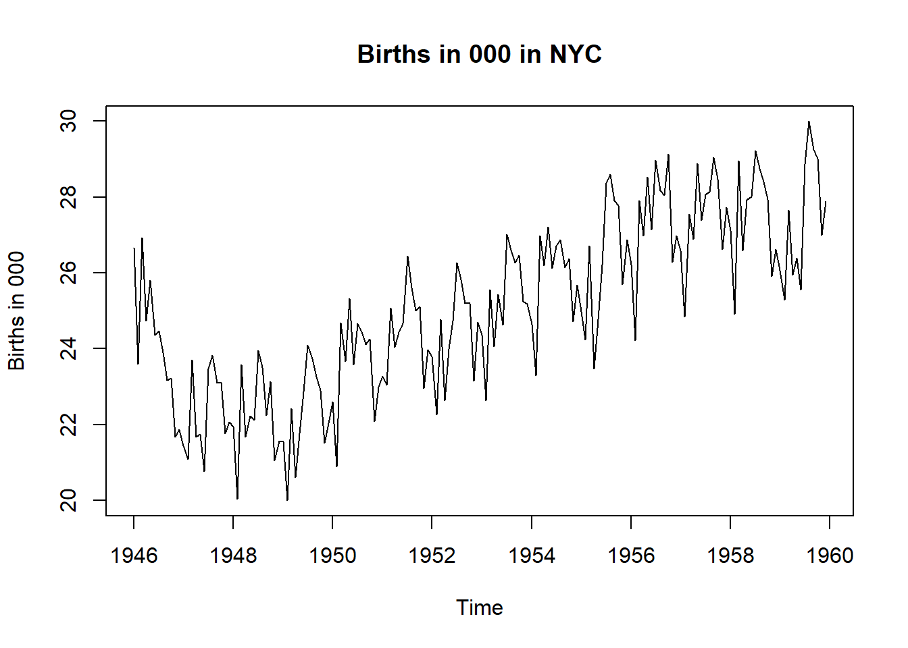
# Decompose the data:
comp <- decompose(birthstimeseries, type = "additive")
head(comp)## $x
## Jan Feb Mar Apr May Jun Jul Aug Sep Oct
## 1946 26.663 23.598 26.931 24.740 25.806 24.364 24.477 23.901 23.175 23.227
## 1947 21.439 21.089 23.709 21.669 21.752 20.761 23.479 23.824 23.105 23.110
## 1948 21.937 20.035 23.590 21.672 22.222 22.123 23.950 23.504 22.238 23.142
## 1949 21.548 20.000 22.424 20.615 21.761 22.874 24.104 23.748 23.262 22.907
## 1950 22.604 20.894 24.677 23.673 25.320 23.583 24.671 24.454 24.122 24.252
## 1951 23.287 23.049 25.076 24.037 24.430 24.667 26.451 25.618 25.014 25.110
## 1952 23.798 22.270 24.775 22.646 23.988 24.737 26.276 25.816 25.210 25.199
## 1953 24.364 22.644 25.565 24.062 25.431 24.635 27.009 26.606 26.268 26.462
## 1954 24.657 23.304 26.982 26.199 27.210 26.122 26.706 26.878 26.152 26.379
## 1955 24.990 24.239 26.721 23.475 24.767 26.219 28.361 28.599 27.914 27.784
## 1956 26.217 24.218 27.914 26.975 28.527 27.139 28.982 28.169 28.056 29.136
## 1957 26.589 24.848 27.543 26.896 28.878 27.390 28.065 28.141 29.048 28.484
## 1958 27.132 24.924 28.963 26.589 27.931 28.009 29.229 28.759 28.405 27.945
## 1959 26.076 25.286 27.660 25.951 26.398 25.565 28.865 30.000 29.261 29.012
## Nov Dec
## 1946 21.672 21.870
## 1947 21.759 22.073
## 1948 21.059 21.573
## 1949 21.519 22.025
## 1950 22.084 22.991
## 1951 22.964 23.981
## 1952 23.162 24.707
## 1953 25.246 25.180
## 1954 24.712 25.688
## 1955 25.693 26.881
## 1956 26.291 26.987
## 1957 26.634 27.735
## 1958 25.912 26.619
## 1959 26.992 27.897
##
## $seasonal
## Jan Feb Mar Apr May Jun
## 1946 -0.6771947 -2.0829607 0.8625232 -0.8016787 0.2516514 -0.1532556
## 1947 -0.6771947 -2.0829607 0.8625232 -0.8016787 0.2516514 -0.1532556
## 1948 -0.6771947 -2.0829607 0.8625232 -0.8016787 0.2516514 -0.1532556
## 1949 -0.6771947 -2.0829607 0.8625232 -0.8016787 0.2516514 -0.1532556
## 1950 -0.6771947 -2.0829607 0.8625232 -0.8016787 0.2516514 -0.1532556
## 1951 -0.6771947 -2.0829607 0.8625232 -0.8016787 0.2516514 -0.1532556
## 1952 -0.6771947 -2.0829607 0.8625232 -0.8016787 0.2516514 -0.1532556
## 1953 -0.6771947 -2.0829607 0.8625232 -0.8016787 0.2516514 -0.1532556
## 1954 -0.6771947 -2.0829607 0.8625232 -0.8016787 0.2516514 -0.1532556
## 1955 -0.6771947 -2.0829607 0.8625232 -0.8016787 0.2516514 -0.1532556
## 1956 -0.6771947 -2.0829607 0.8625232 -0.8016787 0.2516514 -0.1532556
## 1957 -0.6771947 -2.0829607 0.8625232 -0.8016787 0.2516514 -0.1532556
## 1958 -0.6771947 -2.0829607 0.8625232 -0.8016787 0.2516514 -0.1532556
## 1959 -0.6771947 -2.0829607 0.8625232 -0.8016787 0.2516514 -0.1532556
## Jul Aug Sep Oct Nov Dec
## 1946 1.4560457 1.1645938 0.6916162 0.7752444 -1.1097652 -0.3768197
## 1947 1.4560457 1.1645938 0.6916162 0.7752444 -1.1097652 -0.3768197
## 1948 1.4560457 1.1645938 0.6916162 0.7752444 -1.1097652 -0.3768197
## 1949 1.4560457 1.1645938 0.6916162 0.7752444 -1.1097652 -0.3768197
## 1950 1.4560457 1.1645938 0.6916162 0.7752444 -1.1097652 -0.3768197
## 1951 1.4560457 1.1645938 0.6916162 0.7752444 -1.1097652 -0.3768197
## 1952 1.4560457 1.1645938 0.6916162 0.7752444 -1.1097652 -0.3768197
## 1953 1.4560457 1.1645938 0.6916162 0.7752444 -1.1097652 -0.3768197
## 1954 1.4560457 1.1645938 0.6916162 0.7752444 -1.1097652 -0.3768197
## 1955 1.4560457 1.1645938 0.6916162 0.7752444 -1.1097652 -0.3768197
## 1956 1.4560457 1.1645938 0.6916162 0.7752444 -1.1097652 -0.3768197
## 1957 1.4560457 1.1645938 0.6916162 0.7752444 -1.1097652 -0.3768197
## 1958 1.4560457 1.1645938 0.6916162 0.7752444 -1.1097652 -0.3768197
## 1959 1.4560457 1.1645938 0.6916162 0.7752444 -1.1097652 -0.3768197
##
## $trend
## Jan Feb Mar Apr May Jun Jul Aug
## 1946 NA NA NA NA NA NA 23.98433 23.66213
## 1947 22.35350 22.30871 22.30258 22.29479 22.29354 22.30562 22.33483 22.31167
## 1948 22.43038 22.43667 22.38721 22.35242 22.32458 22.27458 22.23754 22.21988
## 1949 22.06375 22.08033 22.13317 22.16604 22.17542 22.21342 22.27625 22.35750
## 1950 23.21663 23.26967 23.33492 23.42679 23.50638 23.57017 23.63888 23.75713
## 1951 24.00083 24.12350 24.20917 24.28208 24.35450 24.43242 24.49496 24.48379
## 1952 24.27204 24.27300 24.28942 24.30129 24.31325 24.35175 24.40558 24.44475
## 1953 24.78646 24.84992 24.92692 25.02362 25.16308 25.26963 25.30154 25.34125
## 1954 25.92446 25.92317 25.92967 25.92137 25.89567 25.89458 25.92963 25.98246
## 1955 25.64612 25.78679 25.93192 26.06388 26.16329 26.25388 26.35471 26.40496
## 1956 27.21104 27.21900 27.20700 27.26925 27.35050 27.37983 27.39975 27.44150
## 1957 27.44221 27.40283 27.44300 27.45717 27.44429 27.48975 27.54354 27.56933
## 1958 27.68642 27.76067 27.75963 27.71037 27.65783 27.58125 27.49075 27.46183
## 1959 26.96858 27.00512 27.09250 27.17263 27.26208 27.36033 NA NA
## Sep Oct Nov Dec
## 1946 23.42333 23.16112 22.86425 22.54521
## 1947 22.26279 22.25796 22.27767 22.35400
## 1948 22.16983 22.07721 22.01396 22.02604
## 1949 22.48862 22.70992 22.98563 23.16346
## 1950 23.86354 23.89533 23.87342 23.88150
## 1951 24.43879 24.36829 24.29192 24.27642
## 1952 24.49325 24.58517 24.70429 24.76017
## 1953 25.42779 25.57588 25.73904 25.87513
## 1954 26.01054 25.88617 25.67087 25.57312
## 1955 26.45379 26.64933 26.95183 27.14683
## 1956 27.45229 27.43354 27.44488 27.46996
## 1957 27.63167 27.67804 27.62579 27.61212
## 1958 27.42262 27.34175 27.25129 27.08558
## 1959 NA NA NA NA
##
## $random
## Jan Feb Mar Apr May
## 1946 NA NA NA NA NA
## 1947 -0.237305288 0.863252404 0.543893429 0.175887019 -0.793193109
## 1948 0.183819712 -0.318705929 0.340268429 0.121262019 -0.354234776
## 1949 0.161444712 0.002627404 -0.571689904 -0.749362981 -0.666068109
## 1950 0.064569712 -0.292705929 0.479560096 1.047887019 1.561973558
## 1951 -0.036638622 1.008460737 0.004310096 0.556595353 -0.176151442
## 1952 0.203153045 0.079960737 -0.376939904 -0.853612981 -0.576901442
## 1953 0.254736378 -0.122955929 -0.224439904 -0.159946314 0.016265224
## 1954 -0.590263622 -0.536205929 0.189810096 1.079303686 1.062681891
## 1955 0.021069712 0.535169071 -0.073439904 -1.787196314 -1.647943109
## 1956 -0.316846955 -0.918039263 -0.155523237 0.507428686 0.924848558
## 1957 -0.176013622 -0.471872596 -0.762523237 0.240512019 1.182056891
## 1958 0.122778045 -0.753705929 0.340851763 -0.319696314 0.021515224
## 1959 -0.215388622 0.363835737 -0.295023237 -0.419946314 -1.115734776
## Jun Jul Aug Sep Oct
## 1946 NA -0.963379006 -0.925718750 -0.939949519 -0.709369391
## 1947 -1.391369391 -0.311879006 0.347739583 0.150592147 0.076797276
## 1948 0.001672276 0.256412660 0.119531250 -0.623449519 0.289547276
## 1949 0.813838942 0.371704327 0.225906250 0.081758814 -0.578161058
## 1950 0.166088942 -0.423920673 -0.467718750 -0.433157853 -0.418577724
## 1951 0.387838942 0.499995994 -0.030385417 -0.116407853 -0.033536058
## 1952 0.538505609 0.414370994 0.206656250 0.025133814 -0.161411058
## 1953 -0.481369391 0.251412660 0.100156250 0.148592147 0.110880609
## 1954 0.380672276 -0.679670673 -0.269052083 -0.550157853 -0.282411058
## 1955 0.118380609 0.550245994 1.029447917 0.768592147 0.359422276
## 1956 -0.087577724 0.126204327 -0.437093750 -0.087907853 0.927213942
## 1957 0.053505609 -0.934587340 -0.592927083 0.724717147 0.030713942
## 1958 0.581005609 0.282204327 0.132572917 0.290758814 -0.171994391
## 1959 -1.642077724 NA NA NA NA
## Nov Dec
## 1946 -0.082484776 -0.298388622
## 1947 0.591098558 0.095819712
## 1948 0.154806891 -0.076221955
## 1949 -0.356859776 -0.761638622
## 1950 -0.679651442 -0.513680288
## 1951 -0.218151442 0.081403045
## 1952 -0.432526442 0.323653045
## 1953 0.616723558 -0.318305288
## 1954 0.150890224 0.491694712
## 1955 -0.149068109 0.110986378
## 1956 -0.044109776 -0.106138622
## 1957 0.117973558 0.499694712
## 1958 -0.229526442 -0.089763622
## 1959 NA NA
##
## $figure
## [1] -0.6771947 -2.0829607 0.8625232 -0.8016787 0.2516514 -0.1532556
## [7] 1.4560457 1.1645938 0.6916162 0.7752444 -1.1097652 -0.3768197
##
## $type
## [1] "additive"plot(comp)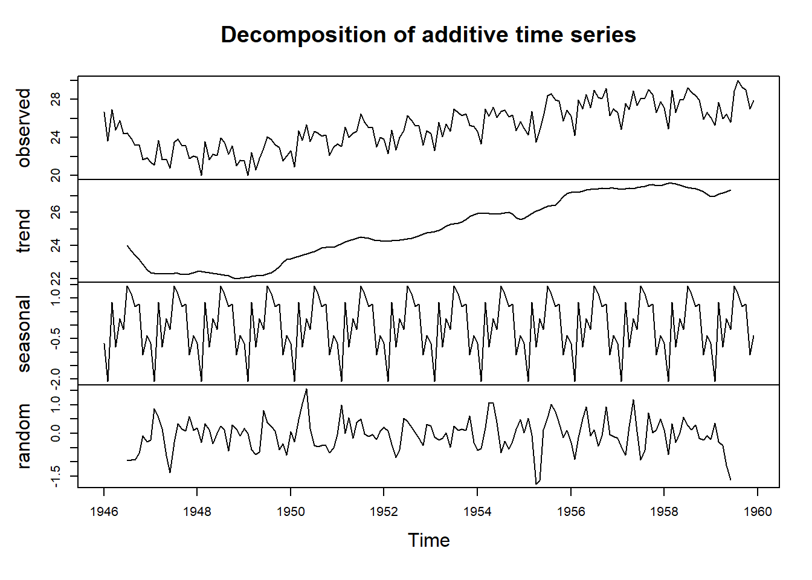
# We can subtract the seasonal component from the original time series and plot it:
decomposed <- birthstimeseries - comp$seasonal
plot(decomposed, ylab="Births in 000", main="Historical data without the seasonal component")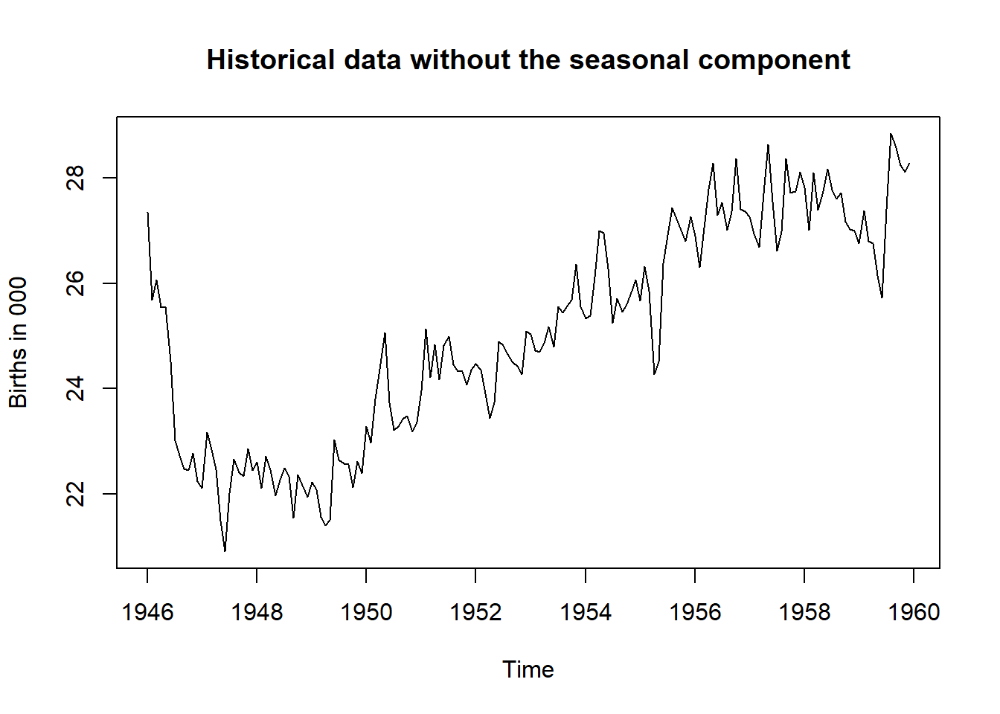
# Let's go back to the slide and see the math that we have used here!
# Let's make a forecast using the same data:
library(forecast)## Registered S3 method overwritten by 'quantmod':
## method from
## as.zoo.data.frame zoo# Using the average method
meanf(birthstimeseries, 10)## Point Forecast Lo 80 Hi 80 Lo 95 Hi 95
## Jan 1960 25.05931 22.06699 28.05163 20.46778 29.65084
## Feb 1960 25.05931 22.06699 28.05163 20.46778 29.65084
## Mar 1960 25.05931 22.06699 28.05163 20.46778 29.65084
## Apr 1960 25.05931 22.06699 28.05163 20.46778 29.65084
## May 1960 25.05931 22.06699 28.05163 20.46778 29.65084
## Jun 1960 25.05931 22.06699 28.05163 20.46778 29.65084
## Jul 1960 25.05931 22.06699 28.05163 20.46778 29.65084
## Aug 1960 25.05931 22.06699 28.05163 20.46778 29.65084
## Sep 1960 25.05931 22.06699 28.05163 20.46778 29.65084
## Oct 1960 25.05931 22.06699 28.05163 20.46778 29.65084plot(meanf(birthstimeseries, 10))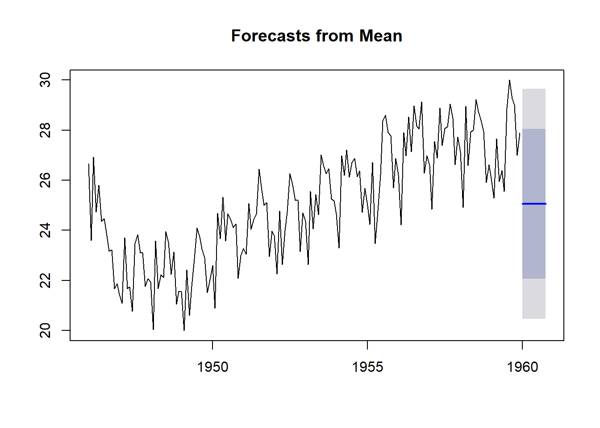
# Using the naive method
naive(birthstimeseries, 10)## Point Forecast Lo 80 Hi 80 Lo 95 Hi 95
## Jan 1960 27.897 25.96800 29.82600 24.94685 30.84715
## Feb 1960 27.897 25.16899 30.62501 23.72486 32.06914
## Mar 1960 27.897 24.55588 31.23812 22.78720 33.00680
## Apr 1960 27.897 24.03901 31.75499 21.99671 33.79729
## May 1960 27.897 23.58363 32.21037 21.30027 34.49373
## Jun 1960 27.897 23.17194 32.62206 20.67065 35.12335
## Jul 1960 27.897 22.79336 33.00064 20.09165 35.70235
## Aug 1960 27.897 22.44097 33.35303 19.55273 36.24127
## Sep 1960 27.897 22.11001 33.68399 19.04656 36.74744
## Oct 1960 27.897 21.79698 33.99702 18.56782 37.22618plot(naive(birthstimeseries, 10))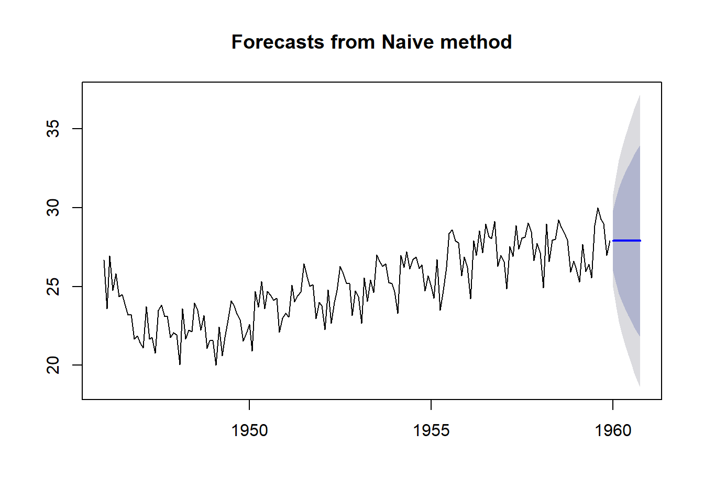
# Using the seasonal naive method
snaive(birthstimeseries, 10)## Point Forecast Lo 80 Hi 80 Lo 95 Hi 95
## Jan 1960 26.076 24.40775 27.74425 23.52463 28.62737
## Feb 1960 25.286 23.61775 26.95425 22.73463 27.83737
## Mar 1960 27.660 25.99175 29.32825 25.10863 30.21137
## Apr 1960 25.951 24.28275 27.61925 23.39963 28.50237
## May 1960 26.398 24.72975 28.06625 23.84663 28.94937
## Jun 1960 25.565 23.89675 27.23325 23.01363 28.11637
## Jul 1960 28.865 27.19675 30.53325 26.31363 31.41637
## Aug 1960 30.000 28.33175 31.66825 27.44863 32.55137
## Sep 1960 29.261 27.59275 30.92925 26.70963 31.81237
## Oct 1960 29.012 27.34375 30.68025 26.46063 31.56337plot(snaive(birthstimeseries, 10))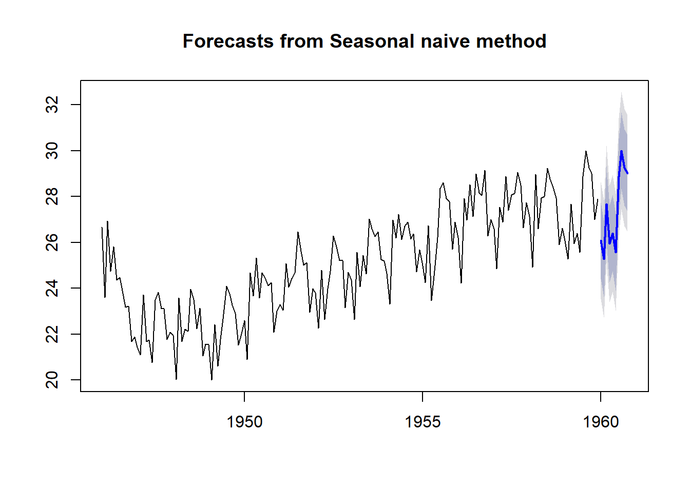
# Try this:
plot(snaive(birthstimeseries, 100))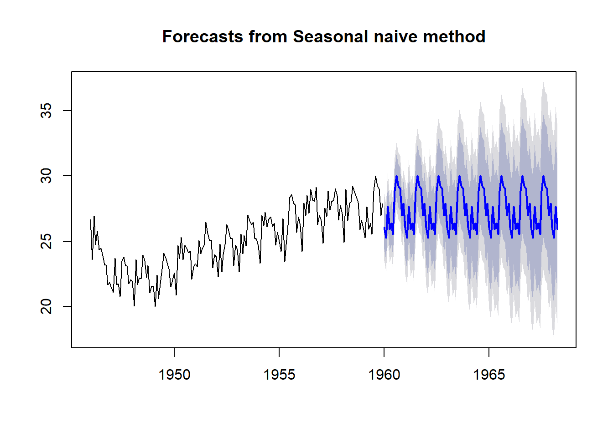
# Using the drift method
rwf(birthstimeseries, 10, drift=TRUE)## Point Forecast Lo 80 Hi 80 Lo 95 Hi 95
## Jan 1960 27.90439 25.96961 29.83916 24.94541 30.86337
## Feb 1960 27.91178 25.16741 30.65614 23.71464 32.10892
## Mar 1960 27.91917 24.54803 31.29030 22.76346 33.07487
## Apr 1960 27.92656 24.02241 31.83071 21.95567 33.89744
## May 1960 27.93395 23.55615 32.31174 21.23869 34.62920
## Jun 1960 27.94134 23.13170 32.75097 20.58564 35.29703
## Jul 1960 27.94872 22.73865 33.15880 19.98060 35.91685
## Aug 1960 27.95611 22.37023 33.54200 19.41324 36.49898
## Sep 1960 27.96350 22.02178 33.90523 18.87642 37.05058
## Oct 1960 27.97089 21.68990 34.25189 18.36494 37.57685plot(rwf(birthstimeseries, h = 8, drift = T))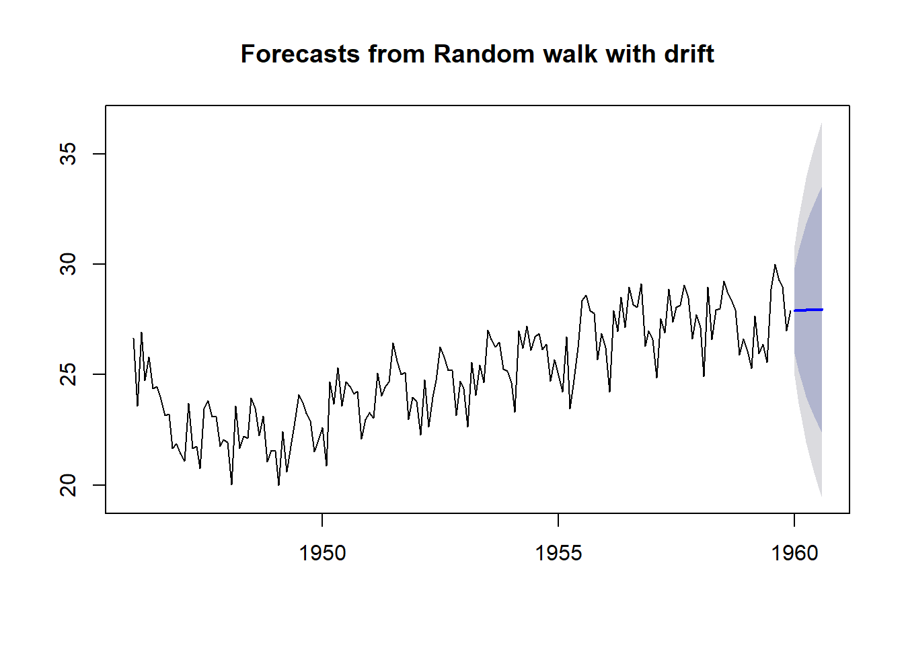
plot(rwf(birthstimeseries, 10, drift=TRUE))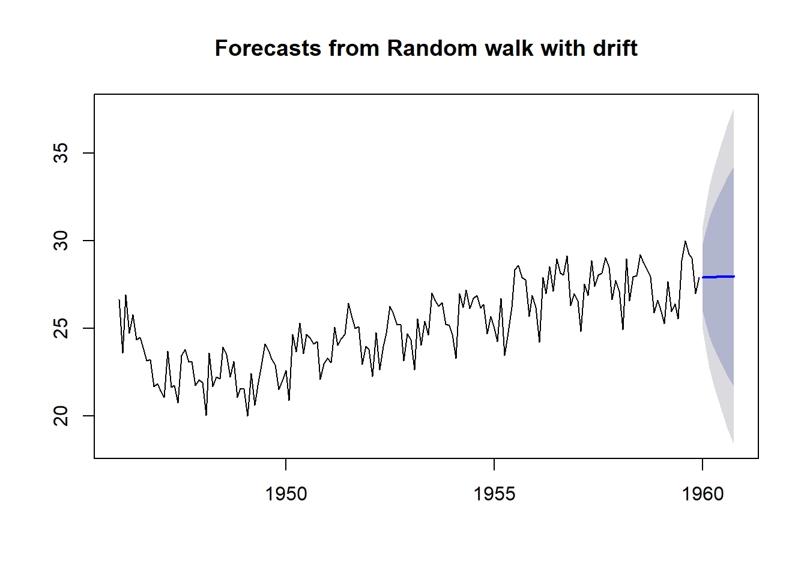
Case III
# -------------------------------------------------------------------------------------------------------------------------------------------
# Case III: monthly sales for a souvenir shop at a beach resort town in Queensland, Australia, for January 1987-December 1993
# (original data from Wheelwright and Hyndman, 1998).
# -------------------------------------------------------------------------------------------------------------------------------------------
souvenir <- scan("http://robjhyndman.com/tsdldata/data/fancy.dat")
# From here on my solution:
souvenir## [1] 1664.81 2397.53 2840.71 3547.29 3752.96 3714.74 4349.61
## [8] 3566.34 5021.82 6423.48 7600.60 19756.21 2499.81 5198.24
## [15] 7225.14 4806.03 5900.88 4951.34 6179.12 4752.15 5496.43
## [22] 5835.10 12600.08 28541.72 4717.02 5702.63 9957.58 5304.78
## [29] 6492.43 6630.80 7349.62 8176.62 8573.17 9690.50 15151.84
## [36] 34061.01 5921.10 5814.58 12421.25 6369.77 7609.12 7224.75
## [43] 8121.22 7979.25 8093.06 8476.70 17914.66 30114.41 4826.64
## [50] 6470.23 9638.77 8821.17 8722.37 10209.48 11276.55 12552.22
## [57] 11637.39 13606.89 21822.11 45060.69 7615.03 9849.69 14558.40
## [64] 11587.33 9332.56 13082.09 16732.78 19888.61 23933.38 25391.35
## [71] 36024.80 80721.71 10243.24 11266.88 21826.84 17357.33 15997.79
## [78] 18601.53 26155.15 28586.52 30505.41 30821.33 46634.38 104660.67# How many points do we have?
length(souvenir)## [1] 84# Chose the trainign period:
training<-souvenir[1:72]
training <- ts(training, frequency=12, start=c(1987,1))
# Plot
plot.ts(training, ylab="Sales", main="Sales per Month")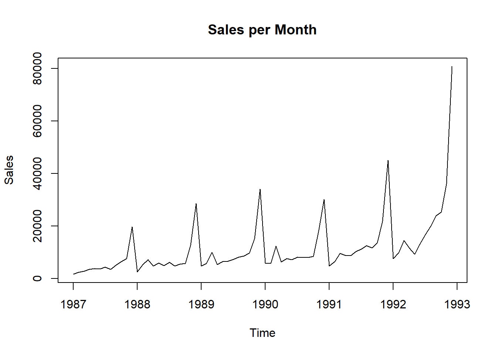
# We see that the cycle is somehow different and increasing along time. Hence, a multiplicative approach might be more adequate.
decomposition <- decompose(training, type = "multiplicative")
plot(decomposition)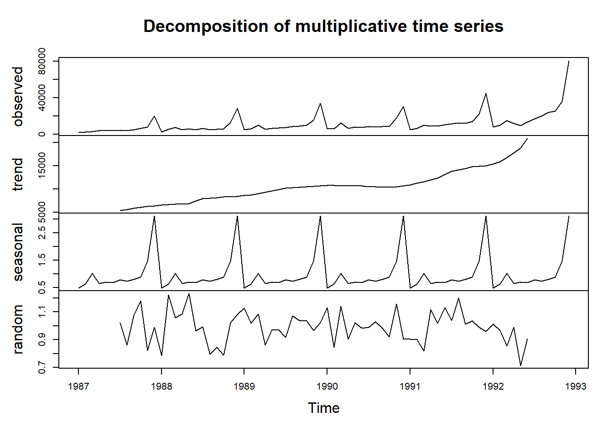
# Forecast
library(forecast)
# Using the average method
m<-meanf(training, 12)
plot(m)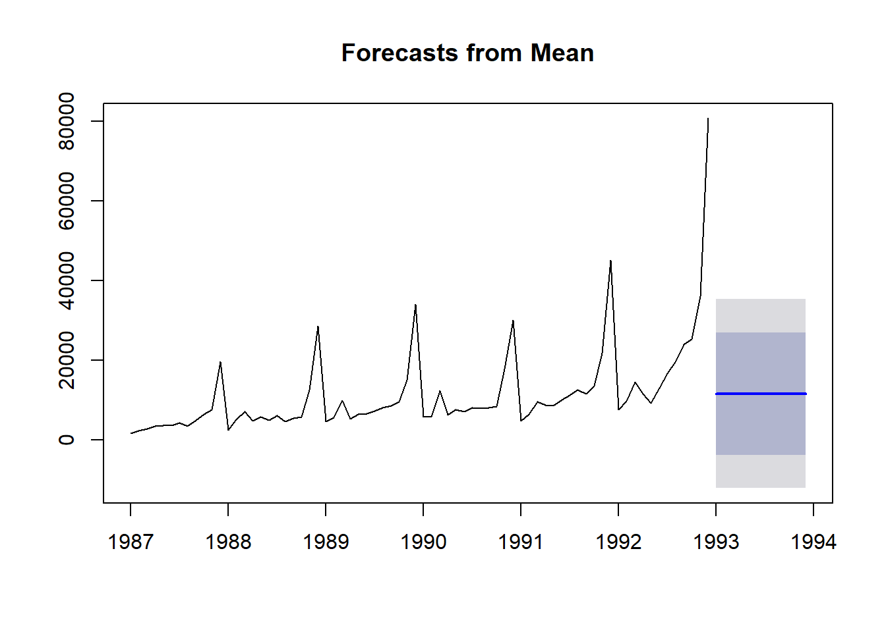
# Using the naive method
n<-naive(training,12)
plot(n)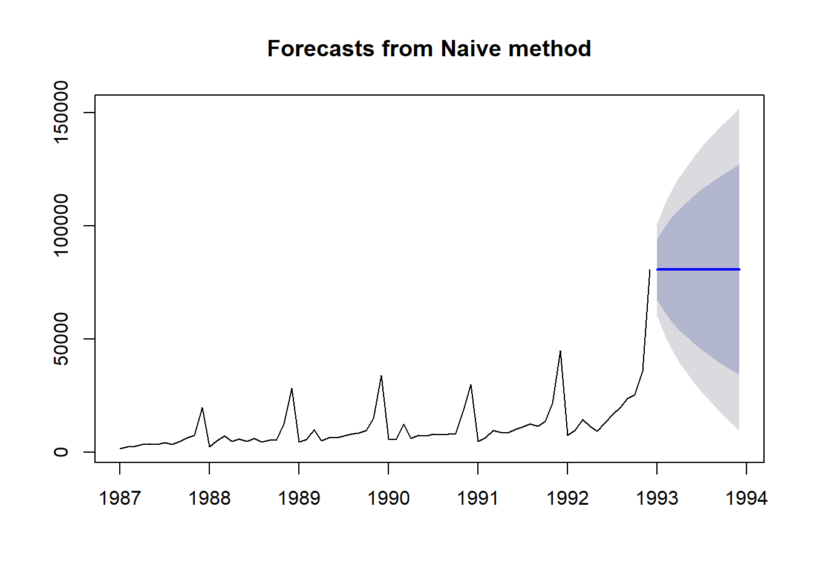
# Using the seasonal naive method
sn<-snaive(training, 12)
plot(snaive(training, 12))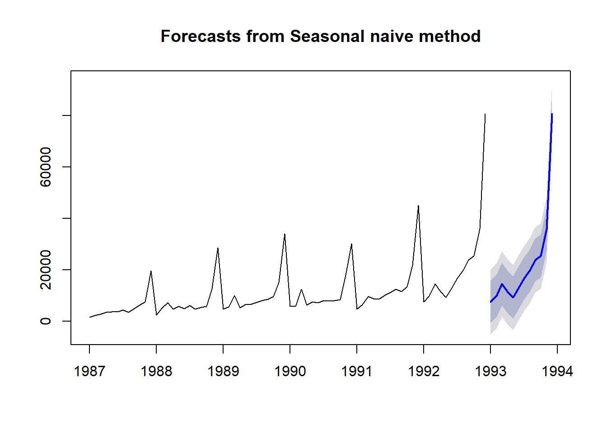
# Using the drift method
d<-rwf(training, 12, drift=TRUE)
plot(rwf(training,12, drift=TRUE))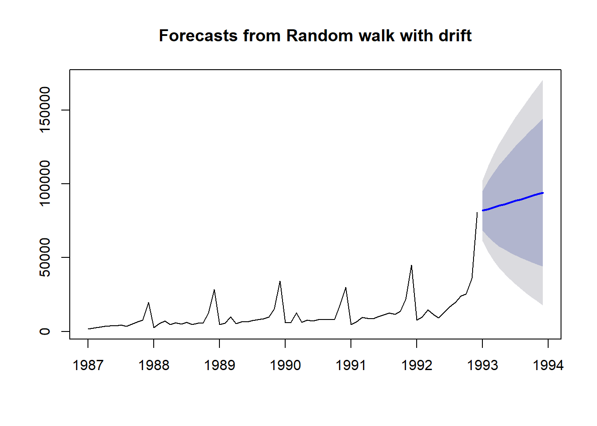
# Compare the 12 forecasted points to the 12 actial points
real<-souvenir[73:84]
mdiff<-real-m$mean
ndiff<-real-n$mean
sndiff<-real-sn$mean
ddiff<-real-d$mean
plot(c(1:12),mdiff,type="l", xlab="Period",ylab="Error",main="Error Forecast of the 4 Methods",ylim=c(-80000,80000))
lines(c(1:12),ndiff,type="l",col="red")
lines(c(1:12),sndiff,type="l",col="blue")
lines(c(1:12),ddiff,type="l",col="green")
legend(1,80000,c("mean","naive","seasonal naive","drift"), lwd=c(1,1), col=c("black","red","blue","green"), y.intersp=0.8)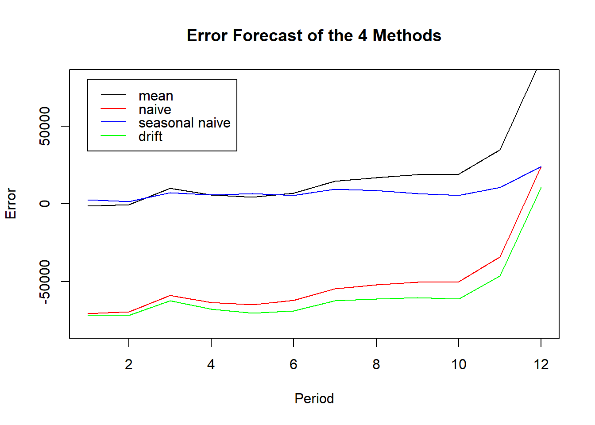
# Plot the real data against the prediction and prediction bands of your favorite method (seasonal naive)
plot(c(1:12),sn$mean, xlab="Period",ylab="Sales",main="Real vs Forecast of the Seasonal Naive Method",ylim=c(-20000,100000),type="l", col="blue")
# Upper Bands
sn$upper## 80% 95%
## Jan 1993 15903.87 20291.72
## Feb 1993 18138.53 22526.38
## Mar 1993 22847.24 27235.09
## Apr 1993 19876.17 24264.02
## May 1993 17621.40 22009.25
## Jun 1993 21370.93 25758.78
## Jul 1993 25021.62 29409.47
## Aug 1993 28177.45 32565.30
## Sep 1993 32222.22 36610.07
## Oct 1993 33680.19 38068.04
## Nov 1993 44313.64 48701.49
## Dec 1993 89010.55 93398.40# Upper 95% Bands
sn$upper[,2]## Jan Feb Mar Apr May Jun Jul Aug
## 1993 20291.72 22526.38 27235.09 24264.02 22009.25 25758.78 29409.47 32565.30
## Sep Oct Nov Dec
## 1993 36610.07 38068.04 48701.49 93398.40ub<-sn$upper[,2]
# Lower 95% Bands
sn$lower[,2]## Jan Feb Mar Apr May Jun
## 1993 -5061.6594 -2826.9994 1881.7106 -1089.3594 -3344.1294 405.4006
## Jul Aug Sep Oct Nov Dec
## 1993 4056.0906 7211.9206 11256.6906 12714.6606 23348.1106 68045.0206lb<-sn$lower[,2]
# Plot the bands on the graph:
lines(c(1:12),real, col= "green")
lines(c(1:12),ub, col="red")
lines(c(1:12),lb, col= "red")
legend(1,80000,c("real","predicted","bands"), lwd=c(1,1), col=c("green","blue","red"), y.intersp=0.8)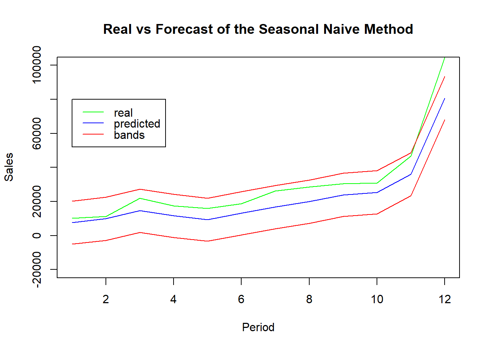
# Compute the mean average error
library(Metrics)##
## Attaching package: 'Metrics'## The following object is masked from 'package:forecast':
##
## accuracymae(real,m$mean)## [1] 18859.99mae(real,n$mean)## [1] 54490.11mae(real,sn$mean)## [1] 7828.278mae(real,d$mean)## [1] 59500.76Case IV
# -------------------------------------------------------------------------------------------------------------------------------------------
# Case III: Sunspots
# -------------------------------------------------------------------------------------------------------------------------------------------
# Install the fpp package
library(fpp)## Loading required package: fma## Loading required package: expsmooth## Loading required package: tseries# Load the data
head(sunspotarea)## Time Series:
## Start = 1875
## End = 1880
## Frequency = 1
## [1] 213.13333 109.28333 92.85833 22.21667 36.33333 446.75000# Fit a model using nearual networks
# p and q are autamtically selected by the network to optimize performance.
fit <- nnetar(sunspotarea)
forecast(fit,h=30)## Point Forecast
## 2012 890.954319
## 2013 1245.779929
## 2014 1011.350326
## 2015 873.022217
## 2016 459.729344
## 2017 242.700647
## 2018 122.774351
## 2019 -2.358598
## 2020 62.432366
## 2021 387.074258
## 2022 853.756055
## 2023 1285.435811
## 2024 1137.453391
## 2025 1214.609318
## 2026 769.321178
## 2027 415.115015
## 2028 252.235752
## 2029 82.925971
## 2030 42.014738
## 2031 68.658782
## 2032 366.650812
## 2033 1044.256100
## 2034 1214.018963
## 2035 1278.632801
## 2036 1190.487136
## 2037 752.550997
## 2038 470.872182
## 2039 283.345734
## 2040 127.669122
## 2041 27.011062autoplot(forecast(fit,h=30))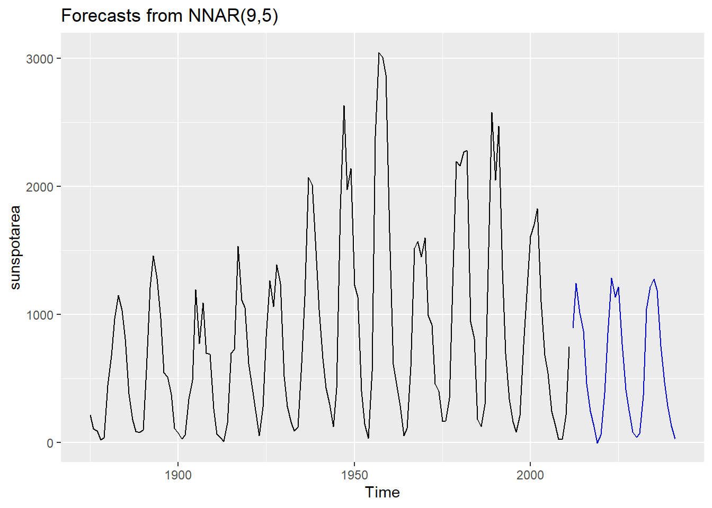
# Try this (trend + seasonality are incorporated):
autoplot(forecast(fit,h=100))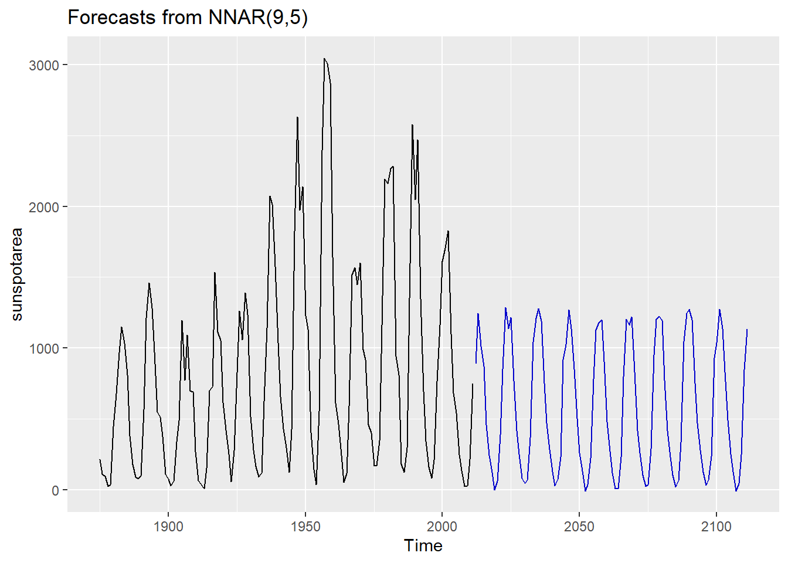
# Make a forecast and using a bootstrap, simulating approach, generate 95% confidence intervals.
fcast <- forecast(fit, PI=TRUE, h=30)
fcast## Point Forecast Lo 80 Hi 80 Lo 95 Hi 95
## 2012 890.954319 772.807309 1012.6908 705.48237205 1072.8632
## 2013 1245.779929 1122.762782 1375.0104 1067.77201216 1438.5004
## 2014 1011.350326 898.574898 1179.4603 826.94815186 1257.3661
## 2015 873.022217 643.599554 1144.9439 526.93698073 1250.9879
## 2016 459.729344 202.916646 684.2433 15.91736040 789.9590
## 2017 242.700647 19.457713 475.8136 -93.92131891 591.2810
## 2018 122.774351 -4.040020 326.6696 -99.04290955 406.8164
## 2019 -2.358598 -93.189242 279.7184 -171.08963059 473.0350
## 2020 62.432366 -50.369050 726.6814 -147.40655622 1158.9747
## 2021 387.074258 22.405127 1342.6001 -126.06083880 1733.1205
## 2022 853.756055 166.808766 1718.0436 -87.99001962 1994.3523
## 2023 1285.435811 669.476608 1860.1598 175.15501977 2089.0119
## 2024 1137.453391 854.406196 1776.7921 563.80830160 2039.5274
## 2025 1214.609318 832.294817 1589.2555 650.97360940 1876.3673
## 2026 769.321178 509.004526 1247.3366 339.12130883 1413.4567
## 2027 415.115015 283.848258 1043.1800 158.97107822 1230.8956
## 2028 252.235752 130.387151 680.2944 18.30807121 1009.9546
## 2029 82.925971 2.721657 436.2799 -91.30877426 676.6696
## 2030 42.014738 -21.743295 423.2989 -115.37198206 789.9379
## 2031 68.658782 -25.797256 1023.9267 -126.28624800 1588.4584
## 2032 366.650812 54.008765 1762.2902 -65.11472853 2129.2958
## 2033 1044.256100 240.489068 2029.6135 0.02091561 2365.7419
## 2034 1214.018963 719.462617 2128.8580 99.43255228 2366.0220
## 2035 1278.632801 973.717432 2099.5349 531.40650184 2362.6639
## 2036 1190.487136 815.427527 1922.0899 583.55923104 2206.6605
## 2037 752.550997 538.486147 1535.8029 323.79764671 1934.1424
## 2038 470.872182 277.795305 1137.7268 159.53535659 1535.1278
## 2039 283.345734 141.857038 812.6444 27.47548707 1154.1213
## 2040 127.669122 58.790915 576.0848 -26.68465697 896.0059
## 2041 27.011062 20.429399 622.2937 -81.38395237 1244.9223autoplot(fcast)